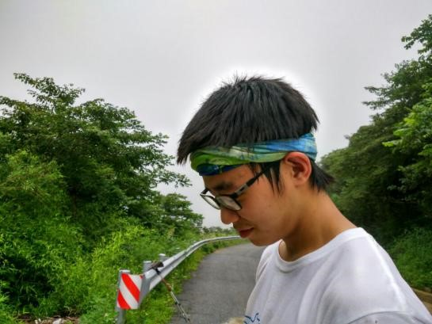
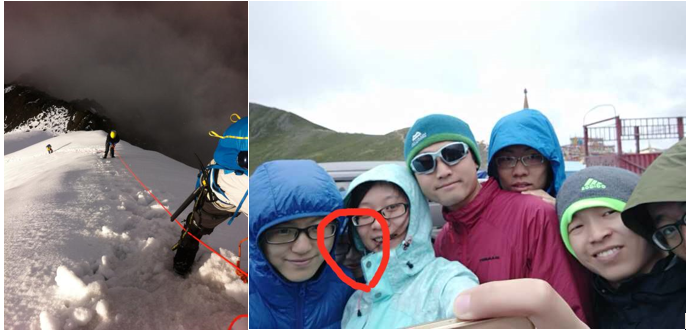
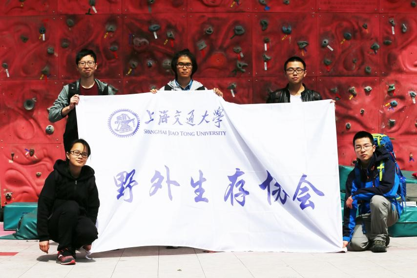
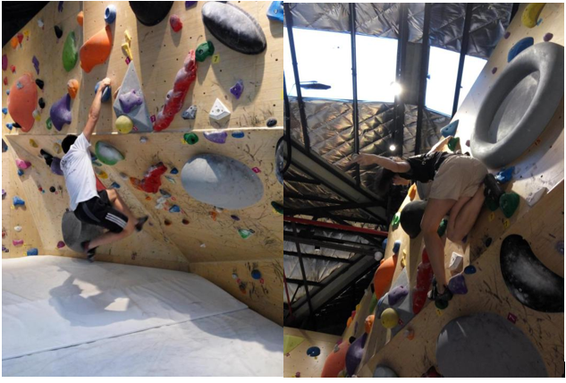
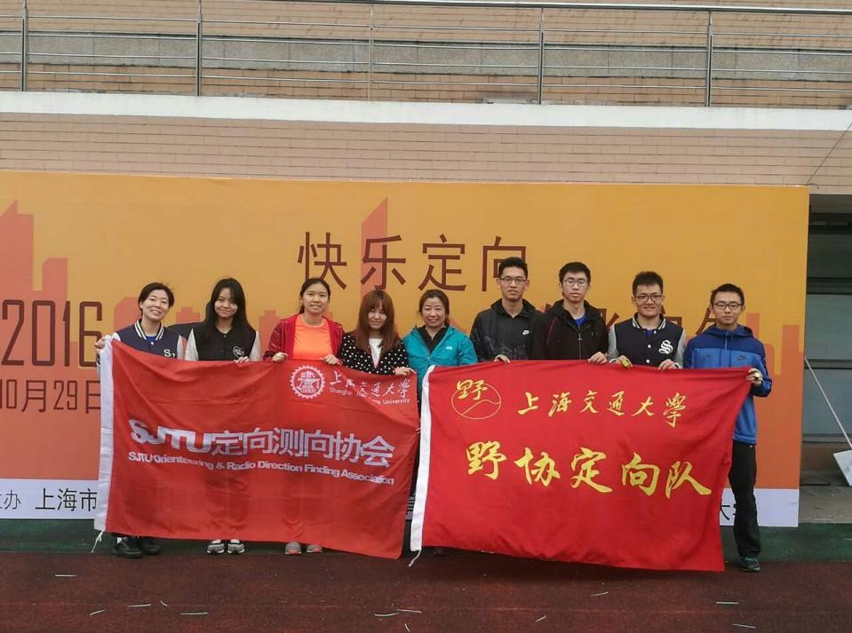
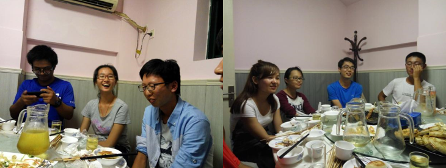

发信人: lvganyu (小雨儿), 信区: outdoor
标 题: 【团爆】定向队
发信站: 饮水思源 (2016年12月23日19:43:58 星期五)
队长：孙瑞田
我是材料学院的孙瑞田，来自山东青岛（体型与一般山东人不符）
出线次数在干事中排倒数（七尖.七尖.那玛.金紫尖）因为整日沉溺于学习中不能自拔
比较意外一个大一下才开始出线的我最后还是能融入协会~毕竟是真爱
第一次出线为了找虐去走七尖，走挫后被封为野协第三大虚逼（第一和第二毕业后我就成
了第一大虚逼····）今后会一如既往走虐线（flag），登山对我来说一方面是会提醒
我现代生活中有那么多值得珍惜的地方，一方面在出线中人与人非常纯粹的互帮互助的关
系在其他地方真的很难见到，也会非常让我感动
 screen.width - 200){this.width = screen.width - 200}">
那玛是十分难忘的经历，为了去雪山，在大一下学期作出了很大的牺牲，作为队伍里唯一
一个大一生，常常走挫常常出错，但是在这条线上向几个老人学到好多东西~（也被zzm骂
了好多次）
下山之后常常煽情地想，不管你去与否，山就在那里~下一条雪山线会是哪里呢？
 screen.width - 200){this.width = screen.width - 200}">
清明节北大比赛~在这之前一直在协会潜水（当时的wsy还是长发当时的czh还很帅）
这个比赛里定向项目我们是倒数第五，不甘心啊~然而明年对小朋友们充满期待~
 screen.width - 200){this.width = screen.width - 200}">
喜欢跑步~喜欢攀岩（不要问我定向队长为什么要说这个）对曾经的攀岩副队（右图的wy）
充满崇拜
 screen.width - 200){this.width = screen.width - 200}">
现在是定向队队长~看到小朋友们都棒棒哒真的很开心。
嗯~今后一心一意带gao定da向xin队wen
 screen.width - 200){this.width = screen.width - 200}">
最后放两张黑照~（注意某些人很黑某些人脸很大某些人很浪某些人很羞涩某些人很能喝）
 screen.width - 200){this.width = screen.width - 200}">
副队长：孟晗
（懒惰的在下又不准备搬运了，请大家移步后勤部的团爆吧=。=）
（啊，搬运两句好了）
目前我是野协后勤部长 定向副队长
说起定向副队长真是不开心
队长对我不好
在推送里放我黑照还说挺好看的（？）
还有啊 我拒绝被撩 就是任性
--
( ・ˍ・) (・ˍ・*)
※ 来源:·饮水思源 bbs.sjtu.edu.cn·[FROM: 59.78.32.54]
|